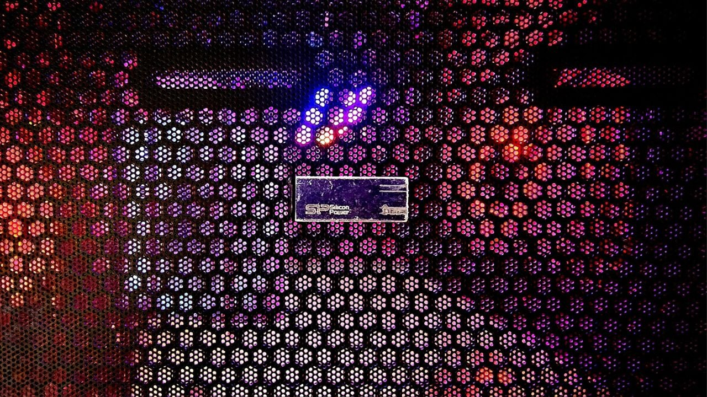

/ Blog
Notes on infra, reliability, and whatever I'm breaking this week.
-

2026-08-10 Poor man’s IPMI: an old USB stick as an out-of-band power buttonShut down the wrong computer first and the headless one becomes unreachable. A udev rule that maps physical USB ports to suspend, reboot and shutdown — the fallback for when the network is the thing that broke.
-
 2026-07-16
VIM
2026-07-16
VIM
Cheatsheet #1: the Vim commands I actually reach for — windows, buffers, sessions, vimdiff.